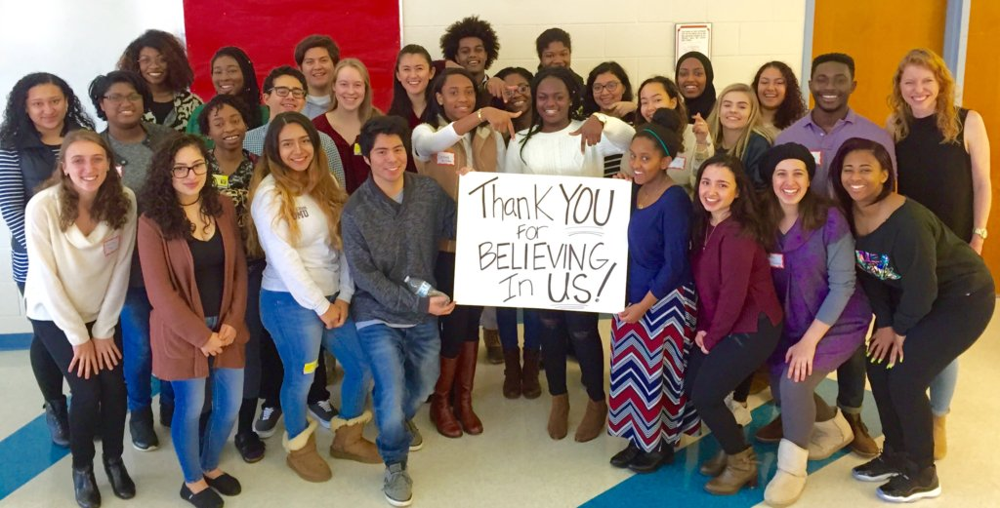

In 1986, our journey began with the Scholarship Fund of Alexandria (SFA) awarding just over $7,000 in scholarships to eight students. Fast forward to last year, where our commitment soared, and we proudly granted $1.2 million in support to over 400 Alexandria City High School graduates, enabling them to embark on diverse educational paths across 60 institutions.
Remarkably, a staggering ninety-five cents of every dollar raised directly fuels these scholarships. As a 501(c)(3) non-profit organization , the SFA has been a beacon of opportunity, dispersing over $18 million in scholarships and empowering more than 5,000 Alexandria students with financial need to pursue higher education since our inception.
Beyond the financial support, the Scholarship Fund of Alexandria recognizes the critical journey towards college. Guided by our mission, we strive to facilitate every eligible senior's pursuit of a postsecondary path. College advising stands as a cornerstone service, empowering each senior to craft a comprehensive plan for their future.
Our commitment extends year after year, aiming to assist an increasing number of students on their educational journeys from ninth grade through college.The SFA remains a constant presence for students and their families, offering guidance and insights to foster academic growth. All ACHS students are welcomed to engage with us year-round, including the summer months. Collaboration is at our core—we work closely with PTAs, PTSAs, businesses, community organizations, neighbors, friends, alumni, staff, and ACPS administration.
In addition to our scholarship initiatives, we collaborate with organizations like NCAN and VCAN to enrich resources, host FAFSA workshops, provide individual FAFSA assistance, and organize special events throughout the year.To maximize our impact, we forge connections with those who believe in our students—the community where they reside and, with time, the community they may one day contribute to and help flourish.
$1.2 Million just from last year
Many of which were financially disadvantaged
We Run the College and Career Center at ACHS
This includes Amazon, Toyota, and many more
Events like Galas, Appreciation events, and more